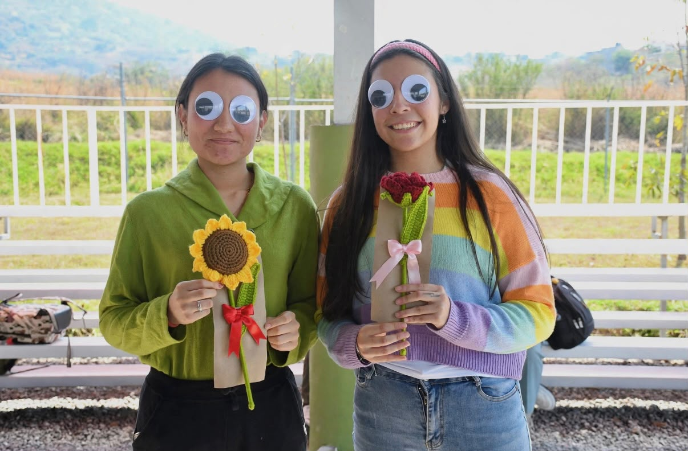

Elegimos el nombre porque somos dos integrantes que, aunque a veces no sabemos qué estamos haciendo siempre encontramos la manera de resolver las cosas juntas
Representa nuestra amistad
nuestro trabajo en equipo y nuestra capacidad de sacar adelante las tareas, aunque a veces parezca que solo tenemos una neurona compartida.
